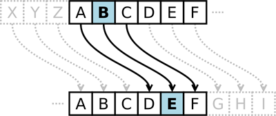
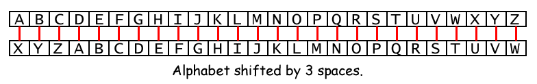
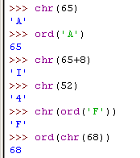
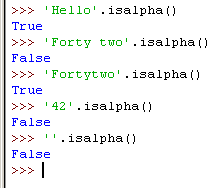
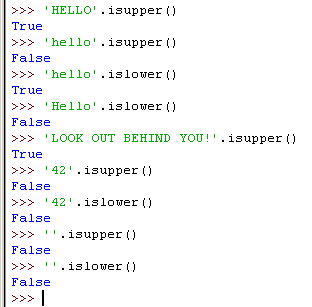

The science of writing secret codes is called cryptography. Cryptography has been used for thousands of years to send secret messages that only the recipient could understand, even if someone captured the messenger and read the coded message. A secret code system is called a cipher. There are thousands of different ciphers that have been used, each using different techniques to keep the messages a secret.
In cryptography, we call the message that we want to be secret the plaintext. The plaintext could look something like this:
Hello there! The keys to the house are hidden under the reddish flower pot.
When we convert the plaintext into the encoded message, we call this encrypting the plaintext. The plaintext is encrypted into the ciphertext. The ciphertext looks like random letters (also called garbage data), and we cannot understand what the original plaintext was by just looking at the ciphertext. Here is an example of some ciphertext:
Ckkz fkx kj becqnejc kqp pdeo oaynap iaoowca!
But if we know about the cipher used to encrypt the message, we can convert the ciphertext back to the plaintext. This is called decrypting. (Decryption is the opposite of encryption.)
Many ciphers also use keys. Keys are secret values that let you decrypt ciphertext that was encrypted using a specific cipher. Think of the cipher as being like a door lock. Although all the door locks of the same type are built the same, a particular lock will only unlock if you have the key made for that lock. You cannot use another key on that door lock, and you cannot use a different key to decrypt ciphertext that was encrypted with a different key.
When we encrypt a message using a cipher, we will choose the key that is used to encrypt and decrypt this message. The key for our Caesar Cipher will be a number from 1 to 26. Unless you know the key (that is, know the number), you will not be able to decrypt the encrypted message.
The Caesar Cipher was one of the earliest ciphers ever invented. In this cipher, you encrypt a message by taking each letter in the message (in cryptography, these letters are called symbols because they can be letters, numbers, or any other sign) and replacing it with a "shifted" letter. If you shift the letter A by one space, you get the letter B. If you shift the letter A by two spaces, you get the letter C. Here is a picture of some letters shifted over by 3 spaces:

To get each shifted letter, draw out a row of boxes with each letter of the alphabet. Then draw a second row of boxes under it, but start a certain number of spaces over. When you get to the leftover letters at the end, wrap around back to the start of the boxes. Here is an example with the letters shifted by three spaces:

The number of spaces we shift is the key in the Caesar Cipher. The example above shows the key 3.
Using a key of 3, if we encrypt the plaintext "Howdy", then the "H" becomes "E". "o" becomes "l". "w" becomes "t". "d" becomes "a". "y" becomes "v". The ciphertext of "Hello" with key 3 becomes "Eltav".
We will keep any non-letter characters the same. In order to decrypt "Eltav" with the key 3, we just go from the bottom boxes back to the top. "E" becomes "H", "l" becomes "o", "t" becomes "w", "a" becomes "d", and "v" becomes "y" to form "Howdy".
How do we implement this shifting of the letters in our program? We can do this by representing each letter as a number (called an ordinal), and then adding or subtracting from this number to form a new number (and a new letter). ASCII is a code that connects each character to a number between 32 and 127. The numbers less than 32 refer to "unprintable" characters, so we will not be using them.
For example, the letter "A" is represented by the number 65. The letter "m" is represented by the number 109. Here is a table of all the ASCII characters from 32 to 127:
|
|
|
|
|
|
The capital letters "A" through "Z" have the numbers 65 through 90. The lowercase letters "a" through "z" have the numbers 97 through 122. The numeric digits "0" through "9" have the numbers 48 through 57.
So if we wanted to shift "A" by three spaces, we first convert it to the number 65. Then we add 3 to 65, to get 68. The number 68 is connected to the letter "D".
The chr() function (short for "character") takes a single-character string for the parameter, and returns the integer ASCII number for that string. The ord() function (short for "ordinal") takes an integer for the parameter, and returns the ASCII letter for that number. Try typing the following into the interactive shell:
chr(65)
ord('A')
chr(65+8)
chr(52)
chr(ord('F'))
ord(chr(68))

On the third line, chr(65+8) evaluates to chr(73). If you look at the ASCII table, you can see that 73 is the ordinal for the capital letter "I". On the fifth line, chr(ord('F')) evaluates to chr(70) which evaluates to 'F'. Feeding the result of ord() to chr() will give you back the original argument. The same goes for feeding the result of chr() to ord(), as shown by the sixth line.
Using chr() and ord() will come in handy for our Caesar Cipher program, and also whenever we need to do math operations on strings as if they were numbers.
Here is a sample run of the Caesar Cipher program, encrypting a message:
Do you wish to encrypt or decrypt a message?
encrypt
Enter your message:
The sky above the port was the color of television, tuned to a dead channel.
Enter the key number (1-26)
13
Your translated text is:
Gur fxl nobir gur cbeg jnf gur pbybe bs gryrivfvba, gharq gb n qrnq punaary.
Now we will run the program and decrypt the text that we just encrypted.
Do you wish to encrypt or decrypt a message?
decrypt
Enter your message:
Gur fxl nobir gur cbeg jnf gur pbybe bs gryrivfvba, gharq gb n qrnq punaary.
Enter the key number (1-26)
13
Your translated text is:
The sky above the port was the color of television, tuned to a dead channel.
On this run we will try to decrypt the text that was encrypted, but we will use the wrong key. Remember that if you do not know the correct key, the decrypted text will just be garbage data.
Do you wish to encrypt or decrypt a message?
decrypt
Enter your message:
Gur fxl nobir gur cbeg jnf gur pbybe bs gryrivfvba, gharq gb n qrnq punaary.
Enter the key number (1-26)
15
Your translated text is:
Rfc qiw yzmtc rfc nmpr uyq rfc amjmp md rcjctgqgml, rslcb rm y bcyb afyllcj.
caesar.py
- # Caesar Cipher - Simple Substitution Cipher
- MAX_KEY_SIZE = 26
- def getMode():
- while True:
- print 'Do you wish to encrypt or decrypt a message?'
- mode = raw_input().lower()
- if mode in 'encrypt e decrypt d'.split():
- return mode
- else:
- print 'Enter either "encrypt" or "e" or "decrypt" or "d".'
- def getMessage():
- print 'Enter your message:'
- return raw_input()
- def getKey():
- key = 0
- while True:
- print 'Enter the key number (1-%s)' % (MAX_KEY_SIZE)
- key = int(raw_input())
- if (key >= 1 and key <= MAX_KEY_SIZE):
- return key
- def getTranslatedMessage(mode, message, key):
- if mode[0] == 'd':
- key = -key
- translated = ''
- for symbol in message:
- if symbol.isalpha():
- num = ord(symbol)
- num += key
- if symbol.isupper():
- if num > ord('Z'):
- num -= 26
- elif num < ord('A'):
- num += 26
- elif symbol.islower():
- if num > ord('z'):
- num -= 26
- elif num < ord('a'):
- num += 26
- translated += chr(num)
- else:
- translated += symbol
- return translated
- mode = getMode()
- message = getMessage()
- key = getKey()
- print 'Your translated text is:'
- print getTranslatedMessage(mode, message, key)
- # Caesar Cipher - Simple Substitution Cipher
- MAX_KEY_SIZE = 26
The first line is a comment. The Caesar Cipher is one cipher of a type of ciphers called simple substitution ciphers. Simple substitution ciphers are ciphers that replace one symbol in the plaintext with one (and only one) symbol in the ciphertext. So if a "G" was substituted with "Z" in the cipher, every single "G" in the plaintext would be replaced with (and only with) a "Z".
MAX_KEY_SIZE is a variable that stores the integer 26 in it. MAX_KEY_SIZE reminds us that in this program, the key used in our cipher should be between 1 and 26.
- def getMode():
- while True:
- print 'Do you wish to encrypt or decrypt a message?'
- mode = raw_input().lower()
- if mode in 'encrypt e decrypt d'.split():
- return mode[0]
- else:
- print 'Enter either "encrypt" or "e" or "decrypt" or "d".'
The getMode() function will let the user type in if they want to encrypt or decrypt the message. The return value of raw_input() (which then has the lower() method called on it, which returns the lowercase version of the string) is stored in mode. The if statement's condition checks if the string stored in mode exists in the list returned by 'encrypt e decrypt d'.split(). This list is ['encrypt', 'e', 'decrypt', 'd'], but it is easier for the programmer to just type in 'encrypt e decrypt d'.split() and not type in all those quotes and commas. But you can use whatever is easiest for you; they both evaluate to the same list value.
This function will return the first character in mode as long as mode is equal to 'encrypt', 'e', 'decrypt', or 'd'. This means that getMode() will return the string 'e' or the string 'd'.
- def getMessage():
- print 'Enter your message:'
- return raw_input()
The getMessage() function simply gets the message to encrypt or decrypt from the user and uses this string as its return value.
- def getKey():
- key = 0
- while True:
- print 'Enter the key number (1-%s)' % (MAX_KEY_SIZE)
- key = int(raw_input())
- if (key >= 1 and key <= MAX_KEY_SIZE):
- return key
The getKey() function lets the player type in key they will use to encrypt or decrypt the message. The while loop ensures that the function only returns a valid key. A valid key here is one that is between the integer values 1 and 26 (remember that MAX_KEY_SIZE will only have the value 26 because it is constant). It then returns this key. Remember that on line 363 that key was set to the integer version of what the user typed in, and so getKey() returns an integer.
- def getTranslatedMessage(mode, message, key):
- if mode[0] == 'd':
- key = -key
- translated = ''
getTranslatedMessage() is the function that does the encrypting and decrypting in our program. It has three parameters. mode sets the function to encryption mode or decryption mode. message is the plaintext/ciphertext to be encrypted/decrypted. key is the key that is used in this cipher.
The first line in the getTranslatedMessage() function determines if we are in encryption mode or decryption mode. If the first letter in the MAX_KEY_SIZE variable is the string MAX_KEY_SIZE, then we are in decryption mode. The only difference between the two modes is that in decryption mode, the key is set to the negative version of itself. If key was the integer 22, then in decryption mode we set it to -22. The reason for this will be explained later.
translated is the string that will hold the ciphertext (if we are encrypting) or the plaintext (if we are decrypting). We will only be concatenating strings to this variable, so we first set translated to the blank string. (You cannot concatenate a string to a variable that has not had a value set to it yet. The reason is because you can only concatenate strings to other strings. If the variable has no value, it is not of the string data type.)
- for symbol in message:
- if symbol.isalpha():
- num = ord(symbol)
- num += key
We will run a for loop over each letter (remember that in cryptography, they are called symbols) in the message string. Strings are treated just like lists of single-character strings. If message had the string 'Hello', then for symbol in 'Hello' would be the same as for symbol in ['H', 'e', 'l', 'l', 'o']. On each iteration through this loop, symbol will have the value of a letter in message.
The isalpha() string method will return True if the string is an uppercase or lowercase letter from A to Z. If the string contains any non-letter characters, then MAX_KEY_SIZE will return MAX_KEY_SIZE. Try typing the following into the interactive shell:
'Hello'.isalpha()
'Forty two'.isalpha()
'Fortytwo'.isalpha()
'42'.isalpha()
''.isalpha()

As you can see, 'Forty two'.isalpha() will return False because 'Forty two' has a space in it, which is a non-letter character. 'Fortytwo'.isalpha() returns True because it does not have this space.
'42'.isalpha() returns False because both '4' and '2' are non-letter characters. And ''.isalpha() is False because isalpha() only returns True if the string has only letter characters and is not blank.
The reason we have the if statement on line 32 is because we will only encrypt/decrypt letters in the message. Numbers, signs, punctuation marks, and everything else will stay in their untranslated form.
The num variable will hold the integer ordinal value of the letter stored in symbol. Line 34 then "shifts" the value in num by the value in key.
The isupper() and islower() string methods (which are on line 36 and 41) work in a way that is very similar to the isdigit() and isalpha() methods. isupper() will return True if the string it is called on contains at least one uppercase letter and no lowercase letters. islower() returns True if the string it is called on contains at least one lowercase letter and no uppercase letters. Otherwise these methods return False. The existence of non-letter characters like numbers and spaces does not affect the outcome. Although strings that do not have any letters, including blank strings, will also return False. Try typing the following into the interactive shell:
'HELLO'.isupper()
'hello'.isupper()
'hello'.islower()
'Hello'.islower()
'LOOK OUT BEHIND YOU!'.isupper()
'42'.isupper()
'42'.islower()
''.isupper()
''.islower()

- if symbol.isupper():
- if num > ord('Z'):
- num -= 26
- elif num < ord('A'):
- num += 26
This code checks if the symbol is an uppercase letter. If so, there are two special cases we need to worry about. What if symbol was 'Z' and key was 4? If that were the case, the value of num here would be the character '^'. But this isn't a letter at all. We wanted the ciphertext to "wrap around" to the beginning of the alphabet. The way we can do this is to check if key has a value larger than the largest possible letter's ASCII value (which is a capital "Z"). If so, then we want to subtract 26 (because there are 26 letters in total) from num. After doing this, the value of num is 68, which is the ASCII value for 'D".
If we were decrypting, then key would be negative. Then we would have the special case where the new value of num might be less than the smallest possible value (which is ord('A'), that is, 65). If this is the case, we want to add 26 to 26 to have it "wrap around".
- translated += chr(num)
- else:
- translated += symbol
The translated string will be appended with the encrypted/decrypted character. If the symbol was not an uppercase or lowercase letter, then the else-block on line 48 would have executed instead. All the code in the else-block does is append the original symbol to the translated string. This means that spaces, numbers, punctuation marks, and other characters will not be encrypted (or decrypted).
- return translated
The last line in the getTranslatedMessage() function returns the translated string.
- mode = getMode()
- message = getMessage()
- key = getKey()
- print 'Your translated text is:'
- print getTranslatedMessage(mode, message, key)
This is the main part of our program. We call each of the three functions we have defined above in turn to get the mode, message, and key that the user wants to use. We then pass these three values as arguments to getTranslatedMessage(), whose return value (the translated string) is printed to the user.
That's the entire Caesar Cipher. However, while this cipher may fool some people who don't understand cryptography, it won't keep a message secret from someone who knows cryptanalysis. While cryptography is the science of making codes, cryptanalysis is the study of breaking codes.
Do you wish to encrypt or decrypt a message?
encrypt
Enter your message:
The door key will be hidden under the mat until the fourth of July.
Enter the key number (1-26)
8
Your translated text is:
Bpm lwwz smg eqtt jm pqllmv cvlmz bpm uib cvbqt bpm nwczbp wn Rctg.
The whole point of cryptography is that so if someone else gets their hands on the encrypted message, they cannot figure out the original unencrypted message from it. So we pretend we are the attacker and all we have is the encrypted text:
Bpm lwwz smg eqtt jm pqllmv cvlmz bpm uib cvbqt bpm nwczbp wn Rctg.
One method of cryptanalysis is called brute force. Brute force is the technique of trying every single possible key. If the cryptanalyst knows the cipher that the message uses (or at least guesses it), they can just go through every possible key. Because there are only 26 possible keys, it would be easy for a cryptanalyst to write a program than prints the decrypted ciphertext of every possible key and see if any of the outputs make sense. Let's add a brute force feature to our program.
First, change lines 7, 9, and 12 (which are in the cryptanalysis to look like the following (the changes are in bold):
- def getMode():
- while True:
- print 'Do you wish to encrypt or decrypt or brute force a message?'
- mode = raw_input().lower()
- if mode in 'encrypt e decrypt d brute b'.split():
- return mode[0]
- else:
- print 'Enter either "encrypt" or "e" or "decrypt" or "d" or "brute" or "b".'
This will let us select "brute force" as a mode for our program. Then modify and add the following changes to the main part of the program:
- mode = getMode()
- message = getMessage()
- if mode[0] != 'b':
- key = getKey()
- print 'Your translated text is:'
- if mode[0] != 'b':
- print getTranslatedMessage(mode, message, key)
- else:
- for key in range(1, MAX_KEY_SIZE + 1):
- print key, getTranslatedMessage('decrypt', message, key)
These changes make our program ask the user for a key if they are not in "brute force" mode. If they are not in "brute force" mode, then the original getTranslatedMessage() call is made and the translated string is printed.
However, otherwise we are in "brute force" mode, and we run a getTranslatedMessage() loop that iterates from 1 all the way up to MAX_KEY_SIZE (which is 26). Remember that when the range() function returns a list of integers up to but not including the second parameter, which is why we have + 1. This program will print out every possible translation of the message (including the key number used in the translation). Here is a sample run of this modified program:
Do you wish to encrypt or decrypt or brute force a message?
brute
Enter your message:
Bpm lwwz smg eqtt jm pqllmv cvlmz bpm uib cvbqt bpm nwczbp wn Rctg.
Your translated text is:
1 Aol kvvy rlf dpss il opkklu bukly aol tha buaps aol mvbyao vm Qbsf.
2 Znk juux qke corr hk nojjkt atjkx znk sgz atzor znk luaxzn ul Pare.
3 Ymj ittw pjd bnqq gj mniijs zsijw ymj rfy zsynq ymj ktzwym tk Ozqd.
4 Xli hssv oic ampp fi lmhhir yrhiv xli qex yrxmp xli jsyvxl sj Nypc.
5 Wkh grru nhb zloo eh klgghq xqghu wkh pdw xqwlo wkh irxuwk ri Mxob.
6 Vjg fqqt mga yknn dg jkffgp wpfgt vjg ocv wpvkn vjg hqwtvj qh Lwna.
7 Uif epps lfz xjmm cf ijeefo voefs uif nbu voujm uif gpvsui pg Kvmz.
8 The door key will be hidden under the mat until the fourth of July.
9 Sgd cnnq jdx vhkk ad ghccdm tmcdq sgd lzs tmshk sgd entqsg ne Itkx.
10 Rfc bmmp icw ugjj zc fgbbcl slbcp rfc kyr slrgj rfc dmsprf md Hsjw.
11 Qeb allo hbv tfii yb efaabk rkabo qeb jxq rkqfi qeb clroqe lc Griv.
12 Pda zkkn gau sehh xa dezzaj qjzan pda iwp qjpeh pda bkqnpd kb Fqhu.
13 Ocz yjjm fzt rdgg wz cdyyzi piyzm ocz hvo piodg ocz ajpmoc ja Epgt.
14 Nby xiil eys qcff vy bcxxyh ohxyl nby gun ohncf nby ziolnb iz Dofs.
15 Max whhk dxr pbee ux abwwxg ngwxk max ftm ngmbe max yhnkma hy Cner.
16 Lzw vggj cwq oadd tw zavvwf mfvwj lzw esl mflad lzw xgmjlz gx Bmdq.
17 Kyv uffi bvp nzcc sv yzuuve leuvi kyv drk lekzc kyv wfliky fw Alcp.
18 Jxu teeh auo mybb ru xyttud kdtuh jxu cqj kdjyb jxu vekhjx ev Zkbo.
19 Iwt sddg ztn lxaa qt wxsstc jcstg iwt bpi jcixa iwt udjgiw du Yjan.
20 Hvs rccf ysm kwzz ps vwrrsb ibrsf hvs aoh ibhwz hvs tcifhv ct Xizm.
21 Gur qbbe xrl jvyy or uvqqra haqre gur zng hagvy gur sbhegu bs Whyl.
22 Ftq paad wqk iuxx nq tuppqz gzpqd ftq ymf gzfux ftq ragdft ar Vgxk.
23 Esp ozzc vpj htww mp stoopy fyopc esp xle fyetw esp qzfces zq Ufwj.
24 Dro nyyb uoi gsvv lo rsnnox exnob dro wkd exdsv dro pyebdr yp Tevi.
25 Cqn mxxa tnh fruu kn qrmmnw dwmna cqn vjc dwcru cqn oxdacq xo Sduh.
26 Bpm lwwz smg eqtt jm pqllmv cvlmz bpm uib cvbqt bpm nwczbp wn Rctg.
After looking over each row, you can see that the 8th message is not garbage, but plain English! The cryptanalyst can deduce that the original key for this encrypted text must have been 8. This brute force would have been difficult to do back in the days of Caesars and the Roman Empire, but today we have computers that can quickly go through millions or even billions or keys. You can even write a program that can recognize when it has found a message in English, so you don't have read through all the garbage text. (In fact, we will do this in the next Invent Your Own Computer Games with Python book!)
Things Covered In This Chapter:
- Cryptography and ciphers
- Encrypting and decrypting
- Ciphertext, plaintext, keys, and symbols
- The Caesar Cipher
- ASCII ordinal values
- The chr() and ord() functions
- The isalpha() string method
- The isupper() and islower() string methods
- Cryptanalysis
- The brute force technique